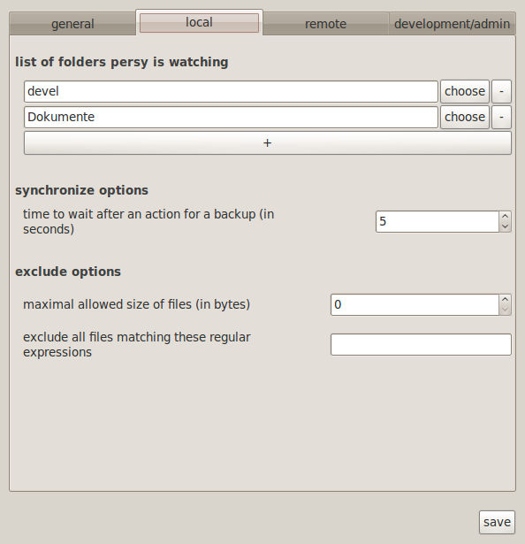

Usage¶
How to use persy as a normal human beeing. (if any of these explanations are not “human” enough, tell me)
Quickstart¶
For a quick start, just run persy
1 | persy
|
persy can also be started from the the normal startup menu in the “accessory” category. Now you have to add directories to persy. You can do this in the settings menu into the “backup” tab (take a look at the screenshot).
The watched directories and files can be in absolute format (starts with / ) or relative to the userhome.
After you added the directories (and maybe lookt at the other configuration options too) you might want to actually start persy. just rightclick on the status icon and check the “start/stop persy” checkbox.

Thats it, persy should be running by now and backup your files.
Quickstart on the commandline¶
You can also do this configuration in the commandline. This is recommended for experienced users only and is not necessary if you configured persy with the settings menu.
1 2 3 4 | persy --config --uname=USERNAME
persy --config --mail=MAIL
persy --config --add_dir=DIR
persy --start
|
You can configure your desktop environment to execute persy at login.
Setup for syncing and/or using a remote backup¶
If you want to sync or backup your files on a remote server, you have to enable a public key authentication for the server (more information). No extra persy serversoftware is required as you can see in this illustration:

The server just needs a ssh server with public key authentication and the git-core package.
You only have to configure the client computer with persy installed! The normal workflow with a blank remote Server and an already initialized local repository is:
1 2 3 4 | persy --config --hostname=SERVER
persy --config --path=PATH
persy --initRemote
persy --start
|
The normal workflow with a already initialized remote Server and no local repository.
Warning
the synced directories should be empty before the sync. i had some problems with already existing files. you can start a sync and then add new files to the synced directory.
1 2 3 4 5 6 7 | persy --config --uname=USERNAME
persy --config --mail=MAIL
persy --config --hostname=SERVER
persy --config --path=PATH
persy --config --add_dir=DIR
persy --syncwithremote
persy --start
|
Limitations¶
Persy does have some limitations in its usage. Some of them are just “good-to-know” and some may break the usefullness for you.
- persy can not track empty folders. This is a shortcoming in git but will hopefully fixed in a future version of it.
- git repositores inside of watched folders can not be tracked. This is also an issue in git and the way git is handeling git repositories in git repositories(“submodules”). If YOU have an idea how to fix this without a “hack” please feel free to contact me.
Advanced Usage¶
You can use persy without a centralized server to which every clients connects and performes the synchronization (like in the illustration image above). You can also run persy without a second computer at all and synchronize with other parts(repositories) on the filesystem. Right now, this is not the intended use and i will not cover this in the cli or the upcomming gui. You can however configure this in the git configuration for persy ~/.persy/git/config and i try to take care of the internal implementation. If you have questions regarding esoteric setups, feel free to mail me.
Usage with an SVN Backend (experimental)¶
You dont have use git to synchronize with to a remote host. SVN is another may to connect from your local computer to a remote server. persy will use git-svn as a bridge between the client (git) and the server (svn).
Warning
This is not very well tested and just exists “because its possible”.
Remove the .persy directory in your homefolder. Start and Stop persy to generate the needed config files. Remove the git directory in .persy/git Alter .persy/config and add “use_gitsvn = True” to the remote section. Initialize persy manually:
1 2 3 | . persy --setenv # manual mode for persy
git svn init <SVNREPOSITORYURL>
git checkout -b local-svn remotes/git-svn
|
Start persy, enable remote synchronization and see if it works! Because of the nature of this quite unsupported feature, most of the settings on the remote settings tab are obsolete from now on.
States in persy¶
When running persy, its possible to run in the following states. A state is a simplification of the status of the file backup and synchronization. Most of them are selfexplanatory.
| icon | state |
|---|---|
| idle, persy is not running | |
| local changes exist that are not saved in the local repository | |
| all local changes are saved | |
| all local changes are saved AND these changes are pushed to the remote server | |
| warning! | |
| error! |